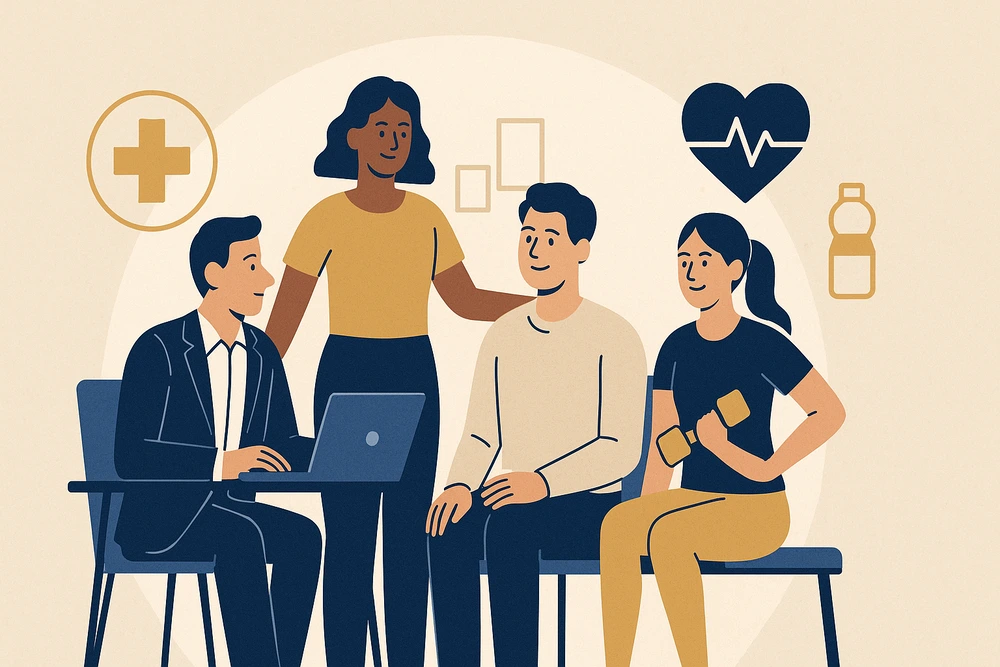

Our Impact
Real projects, real people, real change across communities

Education
Education & Youth Empowerment
Children educated, scholarships provided, and skill training delivered.

Environment
Community Tree Plantation
Planting trees and restoring green cover across communities.

Health
Community Welfare & Health
Clean water projects, health camps, and nutrition support.